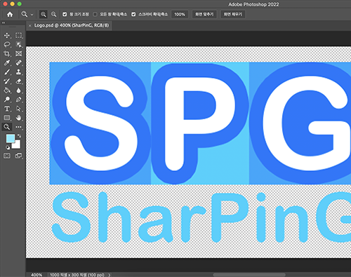

사진

|
이미지를 추출하는 모습 |
|  |
로고를 디자인하는 모습 |
배경과 목적
포트폴리오, 블로그 등에 저를 효과적으로 표현하기 위해서 입니다.
포트폴리오, 블로그 등에 저를 효과적으로 표현하기 위해서 입니다.
역량 강화 과정
우선, 아이패드에 스케치를 해서 대략적인 디자인을 구상하였습니다. 이렇게 구상한 디자인을 바탕으로, 포토샵에 있는 기능을 활용해서 저만의 디자인을 하였습니다. 만약, 어떻게 해야 될지 모를 때는 구글에서 검색해서 방법을 조사하였습니다. 이렇게 디자인을 마친 후, 이미지로 저장하였습니다.
우선, 아이패드에 스케치를 해서 대략적인 디자인을 구상하였습니다. 이렇게 구상한 디자인을 바탕으로, 포토샵에 있는 기능을 활용해서 저만의 디자인을 하였습니다. 만약, 어떻게 해야 될지 모를 때는 구글에서 검색해서 방법을 조사하였습니다. 이렇게 디자인을 마친 후, 이미지로 저장하였습니다.
강화된 역량
- 구현력, 문제 해결 능력 : 포토샵으로 디자인하고, 이미지를 편집하는 과정을 통해서 강화되었습니다.
- 탐구력 : 어떻게 디자인할지 고민하는 과정을 통해서 강화되었습니다.
부연 설명
- 관련 자격증 '컴퓨터그래픽스운용기능사'도 취득하였습니다.